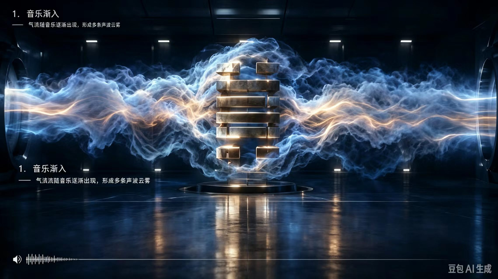

参考 概念图

暗调展厅：左右各一个发亮的竖长开口，浓密的冰白云雾自两侧涌入、在中央青铜卦象处收腰分瓣， 雾里有暖金丝线，地面是镜面并映出模型与光。
实装 学易心音 · 卦象立体

同一套做法：金属环气口（拉丝钢 + 虹膜 + 体积光锥）、青铜金属板卦象（拉丝 + 磨损 + 倒角 + 暖金辉光）、 湍流丝缕自左右涌入并贴着卦体上下缘走、近处转暖金、镜面地面有雾影与模型倒影。
左为参考图（AI 生成的概念图），右为本项目的实装截图（真实浏览器 + 真实出声实时演算，非贴图）。 目标不是像素级复刻，而是把参考图的四件套做出来：气口、金属卦体、湍流丝缕、镜面地面。

暗调展厅：左右各一个发亮的竖长开口，浓密的冰白云雾自两侧涌入、在中央青铜卦象处收腰分瓣， 雾里有暖金丝线，地面是镜面并映出模型与光。
同一套做法：金属环气口（拉丝钢 + 虹膜 + 体积光锥）、青铜金属板卦象（拉丝 + 磨损 + 倒角 + 暖金辉光）、 湍流丝缕自左右涌入并贴着卦体上下缘走、近处转暖金、镜面地面有雾影与模型倒影。